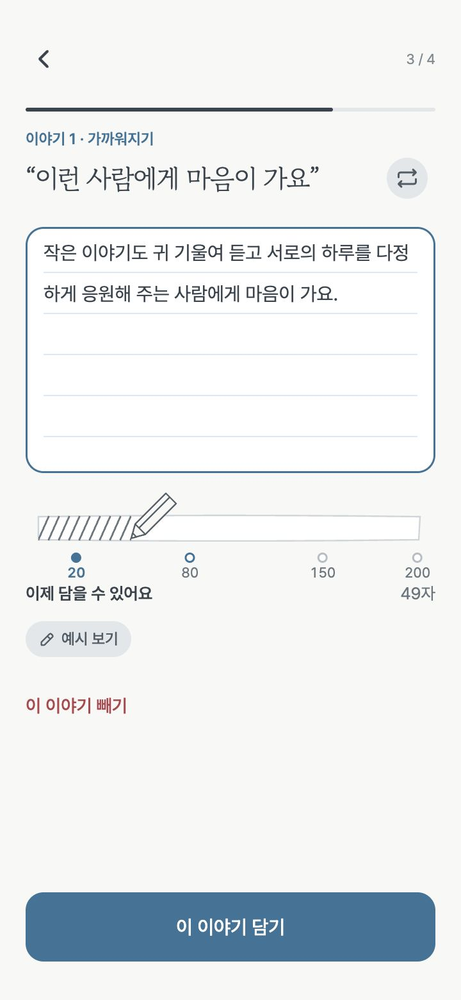
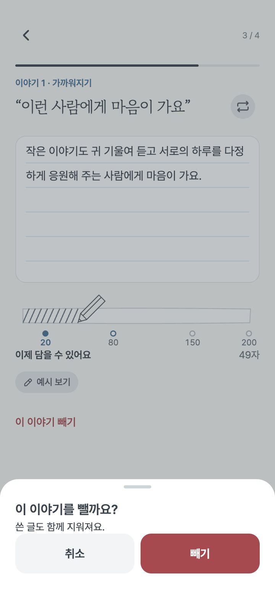
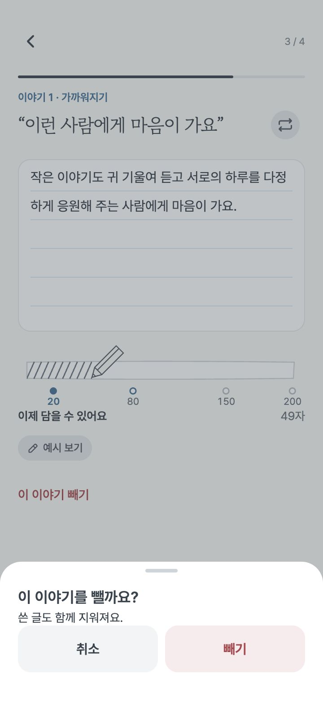
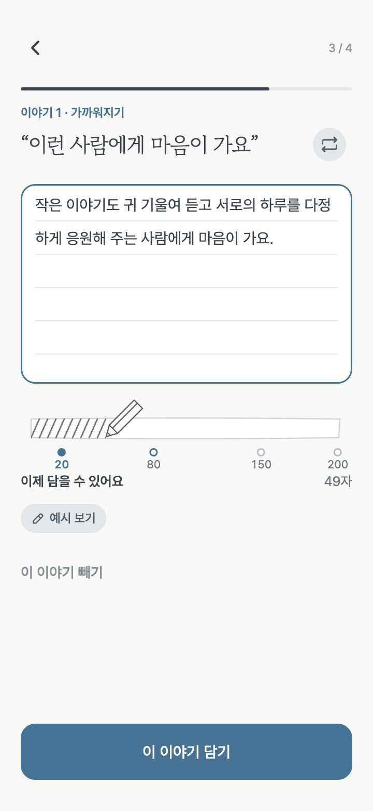
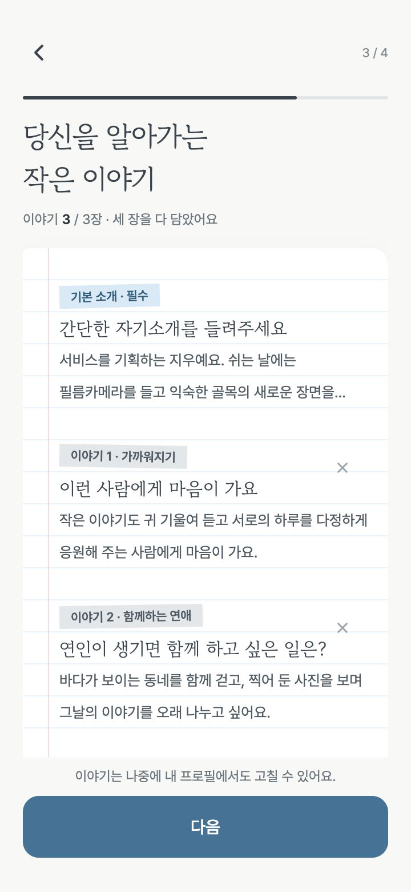
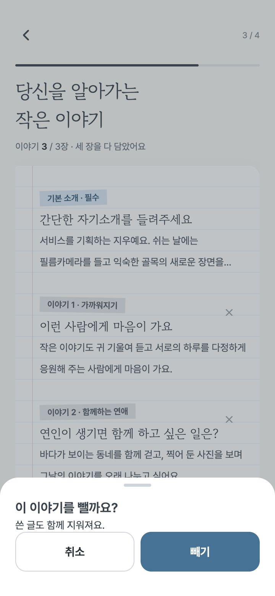
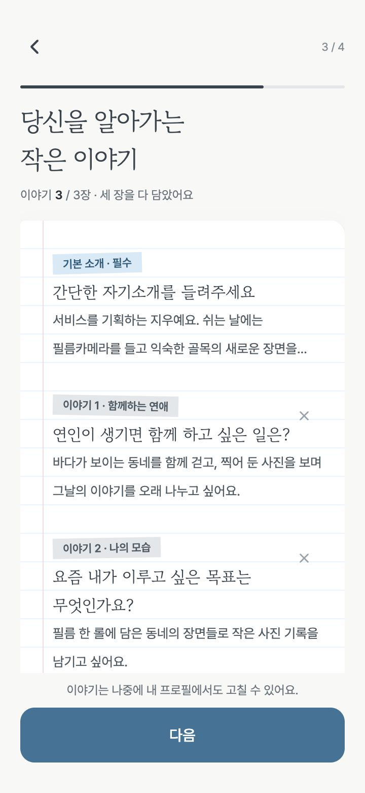

자기소개 · 담은 이야기 빼기
- 지금: 빼는 길이 없어요. 쓰기 화면에는 질문 바꾸기(⇄)만 있고, 글을 지워도 "쓰는 중"으로 남아요. 못 찾은 게 아니라 기능이 없었어요.
- S1 쓰기 화면 아래: 이야기를 눌러 들어간 화면 맨 아래 회색 글자 버튼 "이 이야기 빼기". 고칠 때만 보이는 자리라 목록이 깔끔해요.
- S2 목록 오른쪽 ×: 노트의 이야기마다 오른쪽 위 × (터치 44). 한 번에 보이지만 목록이 조금 바빠져요. 기본 소개(필수)에는 없어요.
- 공통 확인: "이 이야기를 뺄까요? · 쓴 글도 함께 지워져요." 취소 · 빼기. 빼면 뒤 이야기가 한 칸씩 올라오고, 세 장보다 적어지면 "이야기 N장을 더 담아 주세요"로 다음 버튼이 다시 잠겨요.
S1 + S2 함께 · 빼기는 빨강
- S1: 쓰기 화면 아래 "이 이야기 빼기" 글자를 red-600으로.
- S2 ×: X1은 평소 회색(cool-neutral-400) — 목록이 덜 시끄러워요. X2는 × 자체를 red-500으로.
- 확인 시트: 취소는 회색 바탕(흰 + 테두리 대신). 빼기는 B1 진한 빨강 채움(red-600 + 흰 글자) 또는 B2 옅은 빨강(red 12% 바탕 + red-600 글자).




지금
시안



